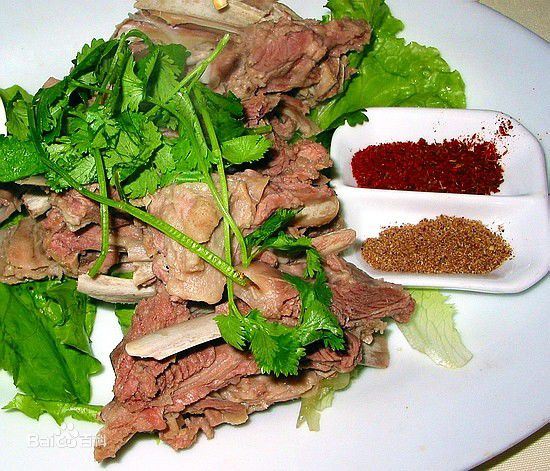

基本介绍
手抓羊肉是我国西北蒙古、藏、回、哈萨克、维吾尔等民族喜爱的传统食物，手抓羊肉，相传有近千年的历史，原以手抓食用而得名。
手抓羊肉源远流长，是生活在我国西北的蒙古、藏、回、哈萨克、维吾尔等民族喜爱的传统食物，吃法有三种，即热吃、冷吃、煎吃。
制作方法
食材准备
主料：带骨的羊腰窝肉1000g。
调料：香菜25g，葱25g，姜丝15g，蒜末10g，大料1g，花椒1g，桂皮1g，小茴香1g，胡椒粉1g，醋60g，绍酒5g，味精1g，精盐5g，芝麻油1g，辣椒油50g。
制作步骤
1、将羊腰窝肉剁成二寸长、五分宽的块，用水洗净。香菜去根洗净消毒，切成二分长的段。葱，三钱切成一寸长的段、二钱切末；
2、把葱末，蒜末，香菜。酱油，味精，胡椒粉，芝麻油，辣椒油等对成调料汁；
3、锅内倒入清水二斤，放入羊肉在旺火上烧开后，撇去浮沫，把肉捞出洗净。接着，再换清水三斤烧开，放入羊肉、大料、花椒、小茴香、桂皮、葱段、姜片、绍酒和精盐。待汤再烧开后，盖上锅盖，移在微火上煮到肉烂为止。将肉捞出，盛在盘内，蘸着调料汁吃。
历史渊源
《说文》中说：“羊，祥也。”《周礼·夏官·羊人》记：“羊人掌羊牲，凡祭祀，饰羔。”羊在古时被赋予成为吉祥的象征和重要的祭祀食品。《本草纲目》中也说，羊肉是大补之物，能比人参、黄芪。
手抓羊肉源远流长，是生活在我国西北的蒙、藏、回、维等民族喜爱的传统食物。在漫长的岁月中，手抓羊肉原本只在西北少数民族聚居的高原和草原的帐篷间被牧民们食用，城市里极少见，名流视之为难登大雅之堂，不屑一顾。
手抓羊肉真正成为驰名全国的美味是20多年前的事。据说，有一位颇有胆识的东乡人率先在临夏市一条偏僻的小巷子里挂起了“东乡手抓羊肉”的牌子。一时间，如万马奔腾，手抓羊肉的香味四处飘溢到了周邻各县，又风靡了兰州、西宁、银川、乌鲁木齐、呼和浩特等城市。